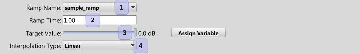

|
Apply Ramp |
| Navigation |
Moves an existing ramp to a new target over time.

Ramps allow you to smoothly interpolate four different aspects of a sound: Volume, Wet Level, Low Pass Cutoff, and Playback Rate. The target value's unit type is dependent on the ramp type, dB, dB, Hz, and semitones, respectively.
See also Ducking and Ramps
 Persist Preset Persist Preset |
 Event Reference Event Reference |
 Execute Event Execute Event |

|
Miles Sound System 9.3b
E-mail miles3@radgametools.com for technical support. Copyright © 1991-2012 by RAD Game Tools, Inc. All Rights Reserved. |

|